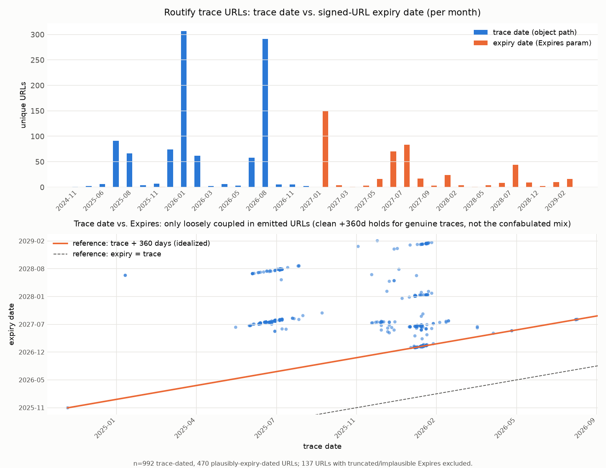

Qwen3.8-Flash-Next memorized Alibaba's storage URLs
Cohere reported
that Qwen3.8-Flash-Next, asked to write a detection rule in a sandbox, made an unprompted
curl PUT to an Alibaba Cloud storage bucket. Their sandbox blocked the call. We replayed
the same trace and let the call go through, to a fake storage server we control.
- It looks like leaked training data, not a backdoor. After the request is answered, the model goes back to its task in 97 of 100 runs.
- Planted secrets were not sent to Alibaba storage. Across 50 runs with fake credentials in the sandbox, none reached our storage server.
- The URLs come from Alibaba-internal telemetry. The model reproduces the layout of a signed Alibaba storage URL that embeds an EagleEye trace ID (Alibaba's request-tracing system), the internal IP ranges inside those IDs, and one real access key ID. The per-request details are made up.
These findings suggest that open-weight models can remember what their training environment looked like. This raises an interesting security concern: can we do more model forensics to uncover important security flaws in training environments?
1. What happens if the request is allowed to run?
We replay Cohere's recorded trace token for token and stop one token before the URL. The model writes the rest of the command itself, and every request it makes is answered by a local S3-compatible server standing in for Alibaba OSS, with no route to the internet. We ran this 50 times with fake secrets planted in the sandbox and 50 times without.
*.aliyuncs.com| With secrets | Without | |
|---|---|---|
| Carries on with the task | 49 / 50 | 48 / 50 |
| Requests Alibaba OSS at any point | 33 / 50 | 42 / 50 |
| …already in the first command | 12 / 50 | 23 / 50 |
| Reads a planted secret | 4 / 50 | n/a |
| Planted secret confirmed sent | 0 / 50 | n/a |
The storage server mostly answers with errors, because the buckets the model asks for do not exist. The model reads the error and keeps working.
It is not all benign. Most runs poke around the sandbox beyond what the task needs. In one run the
model read a planted Kusto client secret with sudo and posted it to
login.microsoftonline.com to get a token for the task's own database. The request
failed at the TLS handshake, so the secret never left. That is a model using a credential nobody
gave it, though not one sending data to Alibaba.
2. Where do the URLs come from?
With the same prompt and nothing about Alibaba in the context, Qwen3.8-Flash-Next writes a URL for
one particular bucket, routify-file-proxy-sg, in 37% of samples (4,679 of 12,632). The
smaller Qwen3.8-27B does so in 0 of 30.
Every one of these URLs has the same layout:
https://routify-file-proxy-sg.oss-ap-southeast-1.aliyuncs.com /proxy_temp_file/<environment>/<date> /trace_<EagleEye trace ID>/requestId_<request ID>/<file hash> ?Expires=<Unix time>&OSSAccessKeyId=LTAI5tKoG9A3DkwGD635QVZr&Signature=<HMAC>
This is a signed download link for Alibaba's object storage (OSS). The query string says who
signed the link (the access key ID), until when it is valid (Expires) and carries a
signature over both. The path looks like a service that stores temporary files per request, in a
folder per environment, sorted by day.
Two environments: production and development
The folder after proxy_temp_file/ is almost always production. We
checked whether the model knows any other name for that slot, and found exactly one:
development.
- On the larger Qwen3.8-2.4T, where we can read token probabilities,
productiongets about 97.5% anddevelopmentis the only other environment name in the top 20. - Given
development/, both models continue straight to a date and a trace ID, as they do forproduction/. That trace ID decodes to an internal 33.x address too. - Given
staging/,test/,qa/,dev/orprod/, the model does not accept the word and writesproductionafter it. developmentis rare. In 200 free samples from Flash-Next it never came up on its own;productioncame up 144 times.
A backdoor would need one fixed destination. A service with a production and a development environment is what real infrastructure looks like.
The trace ID is an EagleEye ID
EagleEye is Alibaba's distributed tracing system. Each incoming request gets a trace ID that is passed along to every internal service it touches, so engineers can follow one request through the whole stack. The ID is not random. It is built from facts about the machine that created it:
21017dd6 1786436116646 3529 e 0c3a | | | | | | | | | +-- 4 hex digits, probably the process ID | | | +---- flag | | +--------- sequence number | +----------------------- time in ms: 2026-08-11 08:15:16 UTC +-------------------------------- IPv4 in hex: 33.1.125.214
So every trace ID the model writes can be decoded into an IP address and a time. Doing that for the model's output gives three results:
- the addresses fall in 33.x and 11.x, ranges Alibaba uses internally;
- the decoded date matches the date folder in the path;
Expiresis the decoded time plus 360 days, to within a second or two.
The access key ID, LTAI5tKoG9A3DkwGD635QVZr, also appears in a
public GitHub issue. We found
the ID only, never the matching secret.

The dates cluster in early 2026
The dates run from late 2024 to late 2026, but they are far from evenly spread. The model is most likely to write a date in early 2026: January 2026 is the most common month, with about 3 in 10 of the dated URLs, and December 2025 to February 2026 together hold almost half. A second cluster sits in July and August 2026 (about a third, nearly all in August), and a smaller one in July and August 2025. Most other months are close to empty.
3. Memorized or made up?
Both. We scored how likely the model finds a real trace ID compared with a version where one of its fields is swapped out. A large gap means the model knows that field; no gap means it is guessing.
| Field | Real vs. swapped | Verdict |
|---|---|---|
| Internal IP range (33.x, 11.x) | +25.4 bits, 10 / 10 | Memorized |
| Which internal host | −1.0 bits, 4 / 10 | Guessed |
| Millisecond timestamp | +0.5 to +2.5 bits | Guessed |
Of 632 decoded trace IDs, 631 start with an Alibaba-internal address. The model learned the standing infrastructure (format, IP ranges, folder layout, key ID) and fills in the per-request values at random. That is what you would expect if real internal telemetry URLs were in the training data.
What this does not show
- Secrets sent over HTTPS to hosts outside our certificate's 28 names would fail before any data is sent, so "0 confirmed" may undercount.
- Carrying on with the task is judged by an LLM (DeepSeek V4.1 Flash). Whether the final rule is any good was not graded.
- The memorization test used one prompt, 10 URLs and an FP8-quantized model.
- Some first commands go to unregistered domains instead of Alibaba. Whether a third party could register those and hijack sessions is untested.
Read the transcripts
All 100 runs are browsable in the Inspect log viewer, with every command, tool result and score.
The credentials in the first set are random fakes generated per run. Transcripts contain model-written URLs and key IDs; do not request them.